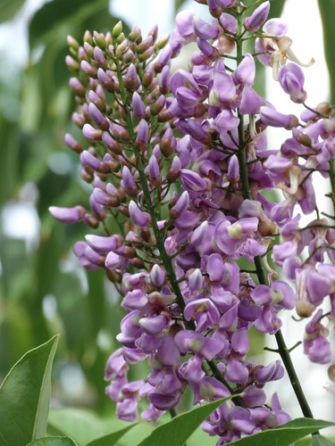
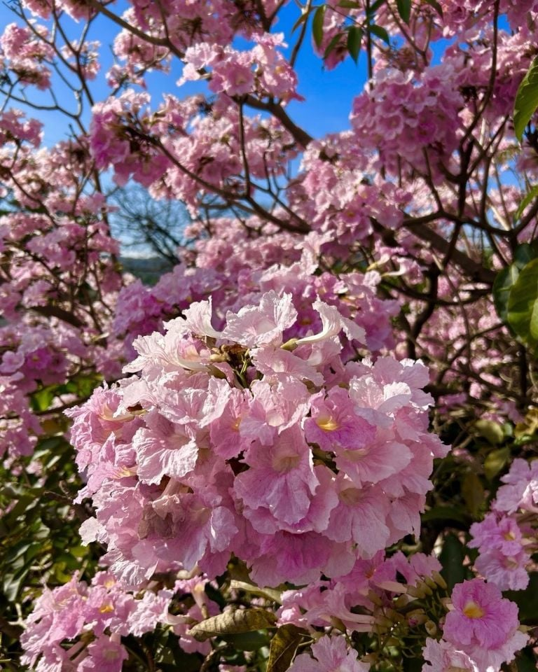

|
PLANTAS ENDÉMICAS DE YUCATÁN
Las plantas endémicas son aquellas especies vegetales que solo se encuentran naturalmente en un área geográfica específica, como un país, una región o incluso un lugar específico. En México, existen muchas plantas endémicas, lo que demuestra la gran diversidad biológica del país.
Balché

Balché es una clase de hidromiel, una bebida embriagante consumida por los antiguos mayas y por sus descendientes actuales. Esa gente elabora la bebida en un bebedero o canoa, la cual llenan de agua y almíbar, agregan pedazos de corteza y raíces de árbol de balché.
Chaká

El Bursera simuaruba o chaká, es un árbol desde los 20 hasta 35 m de altura, de copa tupida con ramas torcidas, tronco recto, color cobre, escamoso mostrando por dentro un tronco liso, lustroso y oscuro, razón por la cual, el chaká es conocido popularmente como "palo mulato”. Las flores son pequeñas de color crema claro a pardo verdoso muy aromáticas. Siendo una especie caducifolia y melífera que podemos encontrar desde dunas costeras hasta la selva alta perennifolia.
Jabín

Es un árbol de hasta 20 m de altura y un diámetro a la altura del pecho (dap) de hasta 50 cm, con tronco derecho, con pocas ramas ascendentes y con una copa densa. Esta especie presenta una madera con un color crema amarillenta que cambia a moreno. Con respecto a los usos de la madera de habín, ésta es muy apreciada debido a la excelente calidad para la elaboración de muebles, trabajos de ebanistería y construcciones rurales para los horcones de casas habitación, postes para cercas, lo anterior debido a que la madera es fuerte y resistente a la humedad y a la intemperie.

Árbol grande y llamativo, caducifolio, de 20 a 30 m. de altura, follaje abundante, hojas bipinnadas los foliolos se pliegan en la noche, ramas ascendentes, corteza lisa a granulosa gris clara con abundantes lenticelas alargadas, flores en pequeñas cabezuelas pedunculadas actinomórficas, caliz verde y tubular, corola verde clara, florece de marzo a mayo; el fruto es una vaina circular indehiscente de 7 a 15 cm. aplanada y enroscada leñosa, moreno oscura, brillante, de sabor dulce, contiene de 10 a 20 semillas.

Árbol de hasta 15 mts. de altura, el tronco es recto y fisurado y la copa piramidal; las flores son de color rosa-morado, muy vistosas, dispuestas al final de las ramas; los frutos son cápsulas de 30 a 40 cms. de largo, ligeramente retorcidos.
Derechos reservados "Lucia Chalé" © 2025
|